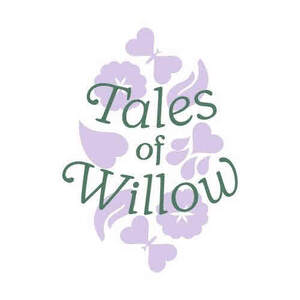

Trade Mark Journal No.2025/048 28 November 2025
UK00004295581 16 November 2025 (3,5,18,21,35)

- Class 3
- Pet shampoos; Shampoo for animals; Non-medicated pet shampoos; Shampoos for pets; Pets (Shampoos for -); Shampoos; Waterless shampoo; Non-medicated hair shampoos; Shampoos for pets [non-medicated grooming preparations]; Dry shampoos; Body shampoos; Shampoos for animals [non-medicated grooming preparations]; Waterless shampoos; Non-medicated mouth washes for pets; Non-medicated shampoos; Hair spray; Deodorants for pets.
- Class 5
- Dog washes [insecticides]; Insecticidal animal shampoo; Medicated shampoos for pets; Medicated shampoo; Insecticidal animal shampoos; Dog lotions for veterinary purposes; Repellents for dogs; Medicated shampoos; Medicated dry shampoos; Pet odor neutralizer; Dietary pet supplements in the form of pet treats; Dietary supplements for pets; Vitamin and mineral supplements for pets; Dietary supplements for animals; Vitamins for pets; Food supplements; Vitamin supplements for animals; Food supplements for veterinary use; Mineral dietary supplements for animals; Dietary supplements for pets in the nature of a powdered drink mix; Medicated supplements for animal feedstuffs; Nutritional supplements for veterinary use; Dietary food supplements; Dietary supplements; Homeopathic supplements; Antibiotic food supplements for animals; Herbal supplements; Probiotic supplements; Flaxseed dietary supplements; Vitamin supplements; Medicated supplements for foodstuffs for animals; Food supplements for dietetic use; Diapers for pets.
- Class 18
- Dog leashes; Dog clothing; Raincoats for pet dogs; Dog coats; Dog collars; Dog shoes; Dog apparel; Clothing for dogs; Pet hair bows; Dog parkas; Dog waste bag dispensers adapted for use with leashes; Dog bellybands; Animal leashes; Cat collars; Coats for dogs; Pet clothing; Dog leads; Harnesses; Harnesses for animals; Animal harnesses; Leather for harnesses; Harness; Collars for cats; Collars for pets; Collars for animals; Collars of animals; Pet leads; Animal leads; Leads for animals; Leashes for animals.
- Class 21
- Shampoo brushes; Brushes for grooming pet animals; Dog food scoops; Pet paw cleaners, non-electric; Pet grooming glove; Shampoo dispensers; De-shedding combs for pets; Deshedding combs for pets; Deshedding brushes for pets; Shampoo racks; Litter scoops for use with pet animals; Pet lick mats; Shampoo holders; Shampoo shields; Animal grooming gloves; Food containers for pet animals; Pet feeding bowls; Pet feeding dishes; Brushes for pets; Caddies for holding hair accessories for household and domestic use; Toothbrushes for pets.
- Class 35
- Retail services in relation to animal grooming preparations; Wholesale services in relation to animal grooming preparations; Retail services in relation to dietary supplements; Online retail store services relating to clothing; Online retail services relating to cosmetics; Online retail services relating to clothing; Online retail services relating to toys; Online retail store services relating to cosmetic and beauty products; Online ordering services; Mail order retail services for cosmetics; Retail services connected with stationery; Retail services in relation to fashion accessories; Retail services in relation to pet products; Mail order retail services connected with clothing accessories; Arranging and conducting of flea markets; Arranging of trade fairs; Organisation of trade fairs; Arranging and conducting trade fairs; Conducting, arranging and organizing trade shows and trade fairs for commercial and advertising purposes; Planning and conducting of trade fairs, exhibitions and presentations for commercial or advertising purposes; Sales promotions at point of purchase or sale, for others; Organisation of exhibitions and trade fairs for commercial and advertising purposes; Organisation of exhibitions and trade fairs for commercial or advertising purposes; Organization of trade fairs; Arranging and conducting of fairs and exhibitions for business and advertising purposes; Arranging and conducting business fairs; Organisation of exhibitions and trade fairs for business and promotional purposes; Conducting virtual trade show exhibitions online.
Willow & Co Pet Wellness Ltd